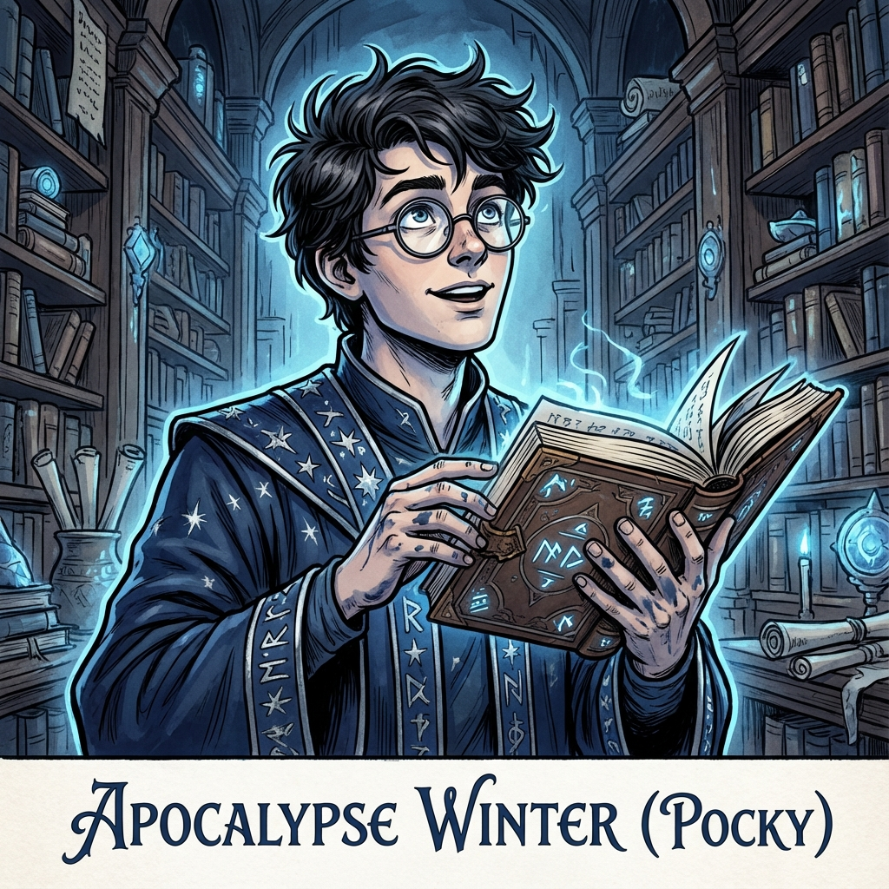

Now he spends most of his days in the Grand Library, studying fragments of old manuscripts and piecing together the secrets of the Dawn's Crown alignment and the elemental essences that power Everpeak.

Apocalypse Winter
Human Wizard and Scholar
Class: Wizard
Race: Human
Age: Early 20s
Background
Apocalypse Winter (nicknamed "Pocky") grew up far away in a small human town with only vague stories of Everpeak. As he came of age, he felt drawn to the citadel by scholarly ambition and the mysteries left by the vanished high elves.
Personality
Intensely curious and eager to learn. Apocalypse radiates excitement about discovering knowledge and solving arcane riddles. Slightly awkward socially but brilliant academically. Often gets lost in research.
Physical Appearance
Young human in early twenties. Slender, scholarly build. Pale skin from library time. Messy dark hair often falling over eyes. Intelligent dark eyes behind round spectacles. Ink stains on fingers from constant note-taking.
Abilities & Traits
**Wizard Abilities:**
- **Spellcasting:** Access to vast wizard spell list
- **Arcane Recovery:** Recover spell slots during short rest
- **Ritual Casting:** Cast spells as rituals
- **Spell Mastery:** Master specific spells for free casting
- **School Specialization:** Enhanced spells from chosen school
**Human Traits:**
- **Versatile:** Extra skill proficiency and feat
- **Adaptable:** Bonus to all ability scores
- **Spellcasting:** Access to vast wizard spell list
- **Arcane Recovery:** Recover spell slots during short rest
- **Ritual Casting:** Cast spells as rituals
- **Spell Mastery:** Master specific spells for free casting
- **School Specialization:** Enhanced spells from chosen school
**Human Traits:**
- **Versatile:** Extra skill proficiency and feat
- **Adaptable:** Bonus to all ability scores
Equipment
- Wizard's robes in deep navy with silver stars
- Multiple pockets for spell components
- Leather-bound spellbook
- Arcane focus pendant (crystal)
- Reading spectacles
- Warm winter cloak
- Star-Touched Focus (Celestial essence item)
- Spell scrolls
- Multiple pockets for spell components
- Leather-bound spellbook
- Arcane focus pendant (crystal)
- Reading spectacles
- Warm winter cloak
- Star-Touched Focus (Celestial essence item)
- Spell scrolls
Player Information
**Player: Avery (Age 13)**
**Playstyle:** Puzzle-solving, tactical spellcasting, creative problem-solving. Values narrative depth and player agency.
**Theme Preferences:** Mystery-solving, experimentation, knowledge acquisition